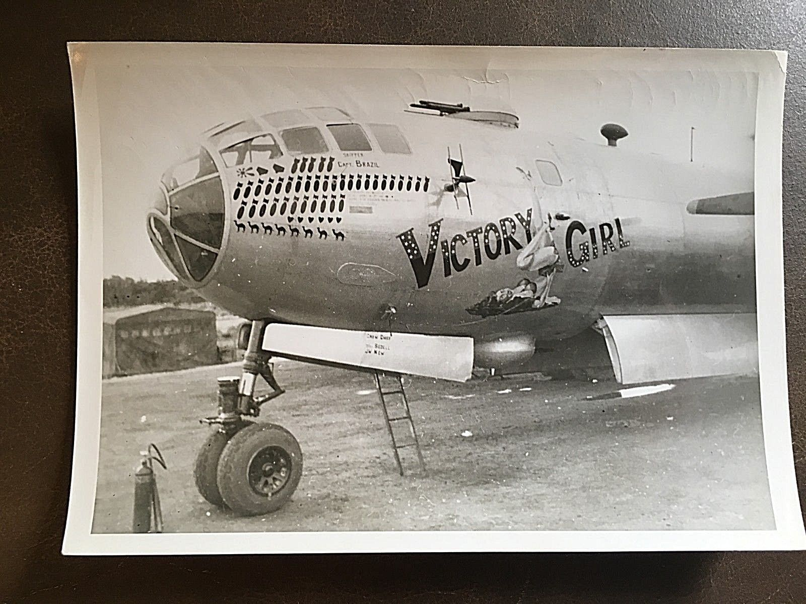

In Zeiten der Aufklärung argumentierte Jean-Jacques Rousseau, dass der Akt des Stillens zu einer engeren Bindung zwischen Mutter und Säugling sowie zwischen Mutter und Familie führe und damit die Grundlage für eine gesellschaftliche Erneuerung darstelle. In gleicher Symbolik wurde selbst die neue französische Republik oftmals als barbusige Frau dargestellt.
Zum Beispiel auf dem Bild, das du gerade angeklickt hast: Ausschnitt aus „Die Freiheit führt das Volk“, 1830, Eugène Delacroix
Diese Darstellung diente auch im Zweiten Weltkrieg der Aufmunterung der Soldaten: Auf den Rumpfnasen amerikanischer Bomber zeigten barbusige Frauen das Victory-Zeichen. Die Ära des Pin-Up begann, als der Oberweite der Frau mehr Augenmerk geschenkt wurde als ihren Fähigkeiten, womit eine verengende Wahrnehmung des Busens als Lustobjekt einherging.
lenkte die Befreiungsbewegung der Frauen erneut das politische Augenmerk auf die Brust als Symbol weiblicher Macht. Zunächst verbrannten amerikanische Frauen öffentlich ihre Büstenhalter, um der exzessiven Erotisierung von Frauen, insbesondere ihrer Brüste, entgegenzuwirken. Zudem demonstrierten sie mit freiem Oberkörper gegen Phänomene wie Pornografie und Sexismus.